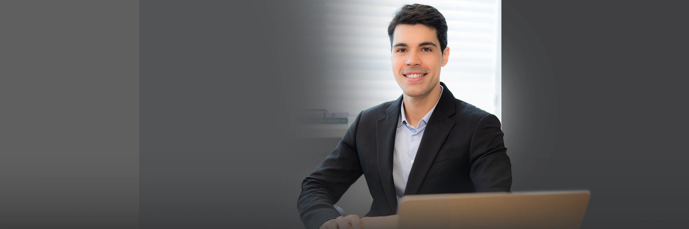
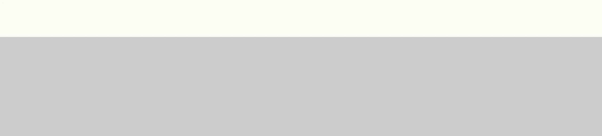
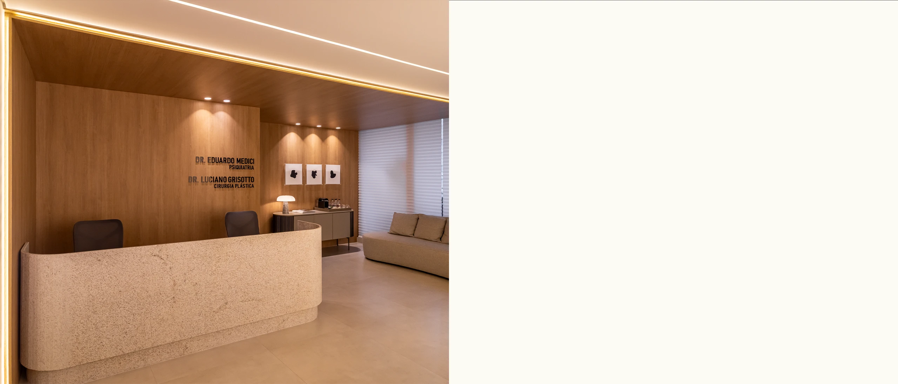

Paleta de cores
Medida no navegador: fundos ponderados pela área ocupada, textos pela quantidade de caracteres. Destaques reúnem cores saturadas e fundos de botão.
Fundos
rgb(252, 250, 243)
rgb(83, 84, 86)
rgb(56, 57, 59)
rgb(97, 206, 112)
Textos
rgb(213, 213, 213)
rgb(104, 104, 104)
rgb(255, 255, 255)
rgb(78, 78, 78)
rgb(65, 65, 65)
rgb(204, 51, 102)
Destaques
rgb(97, 206, 112)
rgb(204, 51, 102)
Gradientes
linear-gradient(218deg, rgb(118, 119, 122) 0%, rgb(83, 84, 86) 100%)linear-gradient(150deg, rgba(255, 255, 255, 0.02) 0%, rgba(255, 255, 255, 0.21) 100%)linear-gradient(90deg, rgb(233, 233, 233) 39%, rgb(177, 177, 177) 100%)radial-gradient(67.54% 100.03% at 50% 0%, rgb(224, 223, 221) 0%, rgb(198, 197, 195) 45%, rgb(175, 174, 172) 100%)linear-gradient(90deg, rgb(110, 112, 116) 0%, rgb(83, 84, 86) 100%)Tipografia
Escala usada (desktop 1440px)
| Tamanho | Peso | Família | Amostra |
|---|---|---|---|
| 72px | 400 | Inter | Texto de exemplo |
| 53px | 400 | Inter | Texto de exemplo |
| 49px | 400 | Inter | Texto de exemplo |
| 44px | 400 | Inter | Texto de exemplo |
| 43px | 400 | Inter | Texto de exemplo |
| 28px | 300 | Inter | Texto de exemplo |
| 24px | 500 | Inter | Texto de exemplo |
| 24px | 300 | Inter | Texto de exemplo |
| 24px | 400 | Inter | Texto de exemplo |
| 22px | 400 | Inter | Texto de exemplo |
Mobile (390px): 36px/400, 35px/400, 34px/400, 32px/400, 28px/400, 24px/500, 21px/300, 20px/600 · H1 no mobile: sem h1 semântico
Tags
| Tag | Família | Tamanho | Peso | Altura de linha | Espaçamento | Caixa | Cor |
|---|---|---|---|---|---|---|---|
| <h2> | Inter | 21px | 300 | 29.4px | -1px | none | #D5D5D5 |
| <h3> | Inter | 24px | 500 | 31.2px | -0.5px | none | #FFFFFF |
| <p> | Sora | 13px | 200 | 16.9px | normal | none | #FFFFFF |
Botões
Recriados com os estilos computados reais. Efeitos de hover e animação não aparecem aqui; veja a seção de animações.
fundo #61CE70 · texto #414141 · raio 14px · padding 20px 50px · 22px/400 none · 7x na páginaCards e containers
Reposicionamento do tecido mamário
raio 14px · sombra none · borda 1px solid rgb(150, 150, 150) · 389x231pxNão desejam implantes de silicone Buscam mamas mais firmes e elevadas Valorizam proporção,
raio 14px · sombra none · borda 1px solid rgb(255, 255, 255) · 593x330pxAgende sua avaliação! O primeiro passo para recuperar sua autoestima começa com uma conver
raio 14px · sombra none · borda 1px solid rgb(255, 255, 255) · 563x291pxBordas, raios e sombras
Sombras
Sem sombras relevantes.
Espaçamentos
- Largura do conteúdo mais comum: 1250px
- Padding vertical das seções (topo/base): 0px/0px (9x)
- Gaps mais usados (flex/grid): 20px, 5px, 10px, 8px
- Altura total da página: 6751px em 9 seções
Estrutura e ritmo de cores das seções
Cada faixa é uma seção de topo, com altura proporcional e a cor ou imagem de fundo real.
Animações, ícones e bibliotecas
- Keyframes próprios: brilho
- Animações de entrada do Elementor: nenhuma
- Classes de scroll reveal da casa: scroll-bottom, scroll-left, scroll-right, scroll-top
- Ícones: 17 SVG, 0 ícones de fonte
- Bibliotecas e tags detectadas: ga4, jquery, lottie, swiper
Snippets da biblioteca presentes nesta página
Imagens do site




